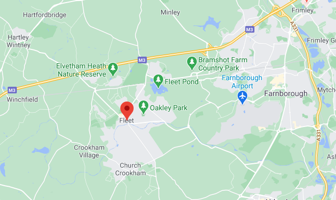
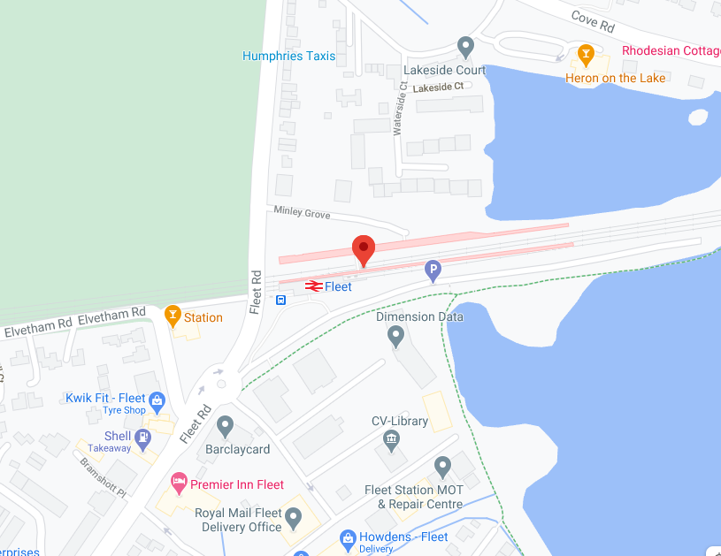

Travel
Fleet is well known for the good travel links it has.
It is in close proximity to London and has a large amount of other unique towns around it.
By Car

Image Credit
Fleet is easy to navigate by car. It is close to the M3 it is possible to drive to other towns with ease, or go further afield if needed.
By Train

Image Credit
Fleet has a train station located near the edge of the town. It is possible to get a train to London or other places where a car may not be suitable. View South Western Railway here.
By bus
Image Credit
Fleet is easy to navigate by car. It is close to the M3 it is possible to drive to other towns with ease, or go further afield if needed.
By plane

Image Credit
Fleet is located close to many different airports. Many people travel to and from Fleet from Heathrow airport